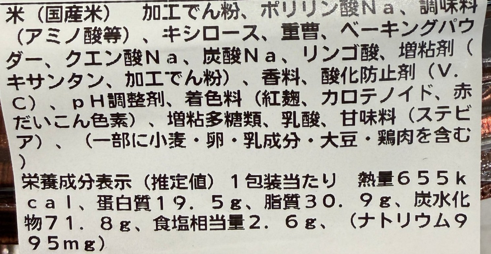
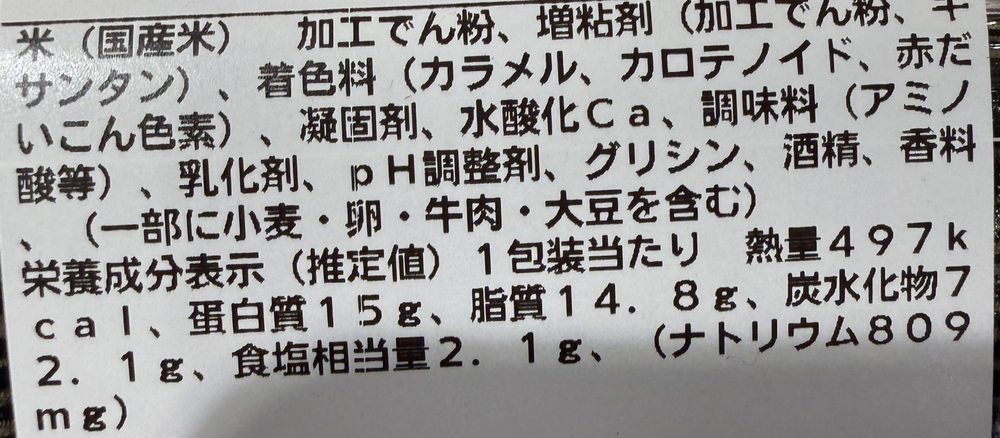
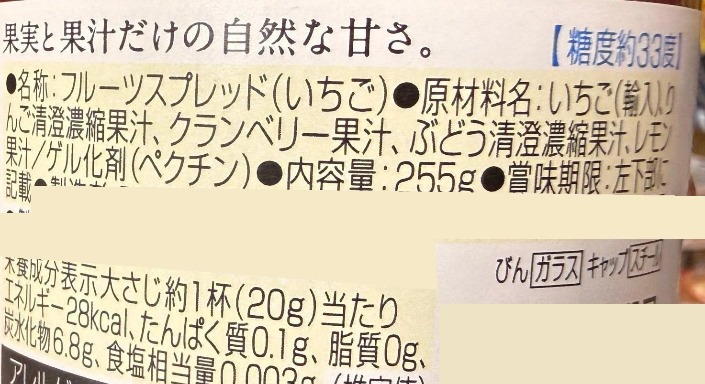

連載「食品を選ぶ目」第3回 塩・油・砂糖の三兄弟

はじめに
前回は、「安さ」のために本物の材料が置きかえられ、かさ増しされる仕掛けを見ました。コーヒーフレッシュやラクトアイスの話から、「植物性の油は体に悪い？」という疑問にも少しふれました。
第3回のテーマは、安部さんが「摂りすぎ三兄弟」と呼ぶ、塩分・油分・糖分です。この三つは、添加物そのものよりも、添加物によって「気づかないうちにたくさん摂ってしまう」ところに怖さがある、と安部さんは言います。
今回はとくに「甘さ」に力を入れます。砂糖だけを気にしていても、ラベルには「果糖ぶどう糖液糖」「炭水化物」「糖類ゼロ」「糖質ゼロ」と、いろいろな名前で甘さが顔を出します。ご家族に血糖値を気にする人がいる家庭では、なおさら見分け方を知っておきたいところです。
舌の「防衛本能」が外される
安部さんによれば、私たちの舌にはもともと、「塩辛い」「油っこい」「甘すぎる」と感じて摂りすぎを止める力があります。ところが添加物を使うと、そのブレーキがききにくくなる、というのです（同書 126ページ）。
たとえば、食塩10gを溶かした水はとても飲めませんが、同じくらいの塩分でもカップ麺ならおいしく食べられてしまう。砂糖50gを溶かした水も飲めませんが、清涼飲料水なら平気で飲めてしまう。酸味料や香料、うま味の素が、強すぎる味を「おいしい」に変えてしまうからです。
安部さんはこれを、添加物の安全性とは別の「怖さ」だと述べています。一つひとつの添加物が基準内でも、結果として塩・油・糖を摂りすぎれば体には影響が出る、ということです。
だからこそ、舌だけに頼らず、数字で確かめる目が大切になります。その数字が書いてあるのが、包装の裏の「栄養成分表示」です。
長男・塩 ―― いまは「食塩相当量」を見ればよい
安部さんは、豚骨ラーメンの成分表示を例に、「ナトリウム3.8g」と書かれていても、約2.5倍してようやく「食塩約9.5g」だと分かる、これでは不親切だと指摘しました（同書 127〜128ページ）。一杯で、大人の一日分の塩をほぼ摂ってしまう量です。
ここはその後、制度のほうが変わりました。いまの栄養成分表示は、熱量・たんぱく質・脂質・炭水化物・食塩相当量の五つが義務で、塩分ははじめから「食塩にすると何g」で書かれています。換算の式は「ナトリウム（mg）×2.54÷1000」ですが、買い物のときに計算する必要はもうほとんどありません。ただ、「食塩無添加」などの製品ではナトリウム量が併記されることもあるので、「ナトリウム400mg＝食塩約1g」と覚えておくと便利です。
目安になるのは、「日本人の食事摂取基準（2025年版）」の目標量です。成人男性7.5g未満、女性6.5g未満。これに対して、令和5年の国民健康・栄養調査では、実際の平均は一日9.8gでした。まだ約3g多い計算です。表示は「100g当たり」なのか「1食当たり」なのかも、忘れず確かめましょう。
次男・油 ―― 「平均」と「わが家」は違う
油について安部さんは、インスタントラーメンの麺が油で揚げてあること、ポテトチップスなどは「舌で感じる油っこさ」と「実際の油の量」が大きく違うことを挙げています（同書 131〜133ページ）。成分表示の「脂質」の数字を見る習慣が、ここでも大切になります。
また安部さんは、日本人も意外とトランス脂肪酸を摂っているとして、女性の一部にWHOの目安を超える人がいるという研究紹介の新聞記事を引いています（同書 133ページ）。前回のコラム④では、食品安全委員会の推計で「日本人の平均は目安を下回る」と紹介しました。一見食い違うようですが、委員会も「脂質に偏った食事の人は留意が必要」と書いており、平均は大丈夫でも、個人の食べ方次第では超えることがある、という点では両者は一致しています。統計の「平均」をわが家の食卓にそのまま当てはめないことが、ここでの教訓です。
三男・糖 ―― ペットボトル一本に「コップ半分」
安部さんがいちばん驚かせるのは、清涼飲料水の話です。成分表示に「炭水化物12g（100ml当たり）」とあれば、500mlのペットボトル一本で約60g。砂糖にするとコップ半分ほどになる、というのです（同書 128ページ、134ページ）。
これだけの糖を水に溶かしただけでは、甘すぎてとても飲めません。そこに酸味料や香料、着色料を加えると、「あっ、おいしい」と感じる飲み物になる。安部さんの言う「防衛本能が外される」、いちばん分かりやすい例です。
安部さんはさらに、こうした飲料の甘味は多くが砂糖ではなく「ぶどう糖果糖液糖」だと書いています。砂糖より安く、使い勝手がよいからです（同書 67ページ）。
ラベルに出てくる「液糖」の名前
この液糖は「異性化糖」とも呼ばれ、トウモロコシなどのでんぷんをぶどう糖に分解し、その一部を酵素で果糖に変えてつくります。JAS（日本農林規格）では、果糖の割合で名前が変わります。
・ぶどう糖果糖液糖：果糖が50％未満
・果糖ぶどう糖液糖：果糖が50％以上90％未満
・高果糖液糖：果糖が90％以上
・これらに砂糖を加えたものは「砂糖混合……液糖」
つまり、先に書かれた名前のほうが多い、と覚えれば簡単です。果糖は冷やすと甘さを強く感じるので、冷たい飲み物や氷菓によく使われます。一方で、パンや調味料など、甘いとは思っていない食品にも広く入っています。
原材料は使った量の多い順に書く決まりなので、この名前が原材料欄の先頭近くにあれば、甘さが主役の食品だと分かります。
【コラム⑤】「糖類ゼロ」「糖質ゼロ」「砂糖不使用」は全部ちがう
店頭でよく見る三つの言葉。どれも「甘くない」「体によさそう」に聞こえますが、意味はそれぞれ違います。
糖類ゼロ（無糖・ノンシュガー） 「糖類」は、ぶどう糖・果糖・砂糖のような小さな糖のこと。これが100g（飲料は100ml）当たり0.5g未満なら「ゼロ」と書けます。完全なゼロとはかぎらない、ということです。また、でんぷんなどは「糖類」に入らないので、糖類ゼロでも炭水化物は入っていることがあります。
糖質ゼロ 「糖質」は、炭水化物から食物繊維を引いたもの。糖類に加えてでんぷんなども含む、より広い枠です。これも100g（ml）当たり0.5g未満なら「ゼロ」です。
砂糖不使用・糖類無添加 これは「含まない」ではなく「加えていない」という意味です。果物や牛乳など、素材もともとの糖は入っています。ただし、砂糖のかわりにジャムや濃縮果汁で甘くした商品は、この表示をしてはいけない決まりになっています。
ほかに、「低糖」など「低い」と書くにも基準があります。一方、「甘さ控えめ」は味の感じ方を表した言葉なので、数字の基準はありません。
安部さんは、メーカーが「糖類ゼロ」「糖質オフ」は大きく強調するのに、甘い清涼飲料水には「糖類○g」と書かないことを問題にしています（同書 135ページ）。今も「糖類」の表示は任意で、義務は「炭水化物」だけです。書いてあるものは「良いこと」、書いてないものに本当の量がある。広告の言葉より、裏の数字です。
「炭水化物」という、見えにくい糖
栄養成分表示で義務になっているのは「炭水化物」です。安部さんは、その中身を次のように整理しています（同書 135ページ、図表5-3）。
・炭水化物＝糖質＋食物繊維
・糖質の中に、糖類（ぶどう糖・果糖・砂糖など）、オリゴ糖など、そしてごはんやパンの「でんぷん」
つまり、「炭水化物」の数字だけでは、それが砂糖なのか、でんぷんなのか、食物繊維なのかは分かりません。清涼飲料水のように食物繊維もでんぷんもほぼない飲み物なら、「炭水化物≒糖類」と読んで大きくは外れません。糖質や食物繊維の内訳を書いている商品も増えているので、あればそこも見てください。
もう一つ大事なのは、でんぷんも体の中ではぶどう糖になることです。甘くないごはんやパン、麺も、食べれば血糖値を上げます。「甘いものを減らしているのに血糖値が下がらない」というときは、砂糖だけでなく炭水化物全体を見る必要があるのはこのためです。
WHOの目安：「自由糖」は一日25gくらいまでが望ましい
WHOは2015年の指針で、加工や調理で加えた糖や果汁の糖など「自由糖」を、総エネルギーの10％未満にするよう強く勧めています。さらに5％未満、およそ一日25g（小さじ六杯ほど）なら、効果はもう一段大きいともしています。ただし、生の果物や野菜、牛乳にもともと含まれる糖は、この対象に入りません。
先ほどのペットボトル一本の約60gは、その25gの倍以上。「食べる」より「飲む」糖のほうが、気づかないうちに量が増えるのです。
安部さんは、清涼飲料水をほぼ毎日飲む女性は、ほとんど飲まない女性に比べて脳梗塞の発症率が約1.8倍だった、という国内の追跡調査を紹介した新聞記事も引いています（同書 135〜136ページ）。これは「飲む人に多かった」という観察の結果で、清涼飲料水だけが原因とまでは言えません。それでも、飲み物の糖を見直すきっかけにはなる数字です。
【コラム⑥】「果糖は血糖値を上げにくい」の落とし穴
「果糖は血糖値を上げにくい」という話を聞いたことがあるかもしれません。これ自体は間違いではありません。ごはんのでんぷんからできるぶどう糖は、そのまま血液に入って血糖値を上げます。一方、果糖は主に肝臓で処理されるので、食後の血糖値はあまり上がりません。
ところが、ここに落とし穴があります。肝臓で使いきれない果糖は、中性脂肪に変わりやすい。大量の果糖を与える実験では血中の中性脂肪が上がりやすく、肝臓に脂肪がたまることとの関係も研究されています。また、果糖は満腹感につながりにくいとも言われます。「血糖値が上がらない＝体にやさしい」ではない、ということです。
では果物も危ないのかというと、そう単純ではありません。果物には食物繊維や水分があり、食べられる量にも自然と限りがあります。WHOの糖の指針も、生の果物に含まれる糖は対象外です。問題になりやすいのは、飲み物に溶かした果糖を一度にたくさん摂るような場合です。
なお、砂糖も体の中ではぶどう糖と果糖に半分ずつ分かれます。砂糖か液糖かという「種類」の違いより、糖の「量」と「摂り方」のほうが大きい、というのが、いまのところ穏当な見方です。果糖と体の関係は研究が続いている分野なので、番外編でもう少し詳しく取り上げます。
【コラム⑦】「カロリーゼロ」の甘さは何もの？
糖類ゼロなのにしっかり甘い飲み物。その甘さの正体は、多くの場合「甘味料」です。原材料欄の「／」の後ろに、「甘味料（アスパルテーム・L-フェニルアラニン化合物、アセスルファムK、スクラロース）」のように、用途と物質名を並べて書かれています。砂糖の数百倍の甘さがあるので、ごく少量で済み、カロリーはほぼありません。
この甘味料について、WHOは2023年に「体重管理や生活習慣病の予防のためには使わないよう勧める」という指針を出しました。砂糖を甘味料に置きかえても、長い目で見ると体重管理には役立たない、という理由です。
ただし、この指針には大事な但し書きがいくつもあります。
・推奨の強さは「条件付き」で、根拠の確かさも「低い」とされています。
・甘味料の「安全性」を否定したものではありません。言っているのは「痩せる効果は確かめられない」ということです。
・すでに糖尿病の人は、この指針の対象外です。血糖値の管理のために甘味料を使うかどうかは、主治医と相談する分野です。
・キシリトールなどの「糖アルコール」も対象外です。
WHOがこの指針で本当に伝えたかったのは、「甘さの置きかえ」よりも、食事全体の甘さそのものを減らすことだと読めます。甘味料をめぐる話題（発がん性の評価など）は、これだけで一回分になるので、これも番外編に回します。
【実物で確かめる】買い物かごのラベル三枚
ここまでの見方で、筆者が近所のスーパーで手に取った三品の裏を読んでみます。写真の製造者名は伏せています。
揚げ物の弁当と、牛肉の弁当
同じ店に並んでいた弁当二つです。どちらも「1包装当たり」の表示なので、そのまま比べられます。


| 1包装当たり | 若鶏竜田揚げとのり明太の弁当 | 牛肉の弁当 |
|---|---|---|
| 熱量 | 655kcal | 497kcal |
| 脂質 | 30.9g | 14.8g |
| 炭水化物 | 71.8g | 72.1g |
| 食塩相当量 | 2.6g | 2.1g |
炭水化物はどちらも72g前後で、ほぼ同じです。違いは油で、脂質は竜田揚げのほうが約2倍あります。脂質は1gで約9kcalなので、竜田揚げの弁当では熱量の4割あまり（約280kcal）が油から来ている計算です。
「日本人の食事摂取基準（2025年版）」は、総エネルギーのうち脂質から摂る割合の目標を20％以上30％未満としています。竜田揚げの弁当は、一食でこれを上回ります。牛肉の弁当は約27％で、目標の内に収まっています。揚げ物かどうかで、油の量はこれだけ変わるのです。
塩は、二つとも一食で2gを超えています。女性の目標量6.5g未満と比べると、竜田揚げの弁当で約4割、牛肉の弁当で約3分の1にあたります。ナトリウムの数字から換算してみると、995mgは食塩約2.5g、809mgは約2.1gで、表示はおおむね合っています（表示はどちらも推定値です）。
もう一つ、竜田揚げの弁当の原材料欄には「甘味料（ステビア）」があります。甘いとは思わない弁当にも、甘さは入っているのです。
「果実と果汁だけの自然な甘さ」のいちごのスプレッド
ジャムの棚にあった、いちごのフルーツスプレッドです。ラベルの一番上に「果実と果汁だけの自然な甘さ。」とあります。原材料は、いちご、りんご清澄濃縮果汁、ぶどう清澄濃縮果汁、レモン果汁、クランベリー果汁、ゲル化剤（ペクチン）。たしかに「砂糖」の文字はありません。

ところが栄養成分表示を見ると、大さじ約1杯（20g）当たり炭水化物6.8g。ラベルの隅には「糖度約33度」とあります。重さのおよそ3分の1が糖ということで、6.8÷20＝34％と、二つの数字どうしも合っています。
甘さの元は、りんごとぶどうの濃縮果汁です。先に見たWHOの「自由糖」には、果汁の糖も入ります。生の果物の糖とは扱いが違うのです。トースト1枚に大さじ2杯を塗れば約14g、一日25gという目安の半分あまりになります。
コラム⑤で見たとおり、濃縮果汁で甘くした品は「砂糖不使用」とは書けない決まりです。そこで表に出てくるのが、「自然な甘さ」のような言葉です。「甘さ控えめ」と同じく、数字の基準で決められた言葉ではありません。言葉が「自然」でも、糖の量は裏の数字で確かめる。この連載の合言葉どおりです。
今日からできること
1．栄養成分表示は、まず「何g当たり」かを確かめてから、「食塩相当量」「脂質」「炭水化物」の三つを見る。
2．飲み物は「炭水化物（100ml当たり）×本数の容量」で、一本の糖の量を概算する。
3．原材料欄の先頭近くに「……液糖」「砂糖」があれば、甘さが主役だと知る。
4．「ゼロ」「不使用」「控えめ」は、何がゼロで何を使っていないのかを言葉どおりに読む。
5．家族に血糖値や血圧を気にする人がいれば、その人の主治医の指示を先にし、ラベルはその指示を守るための道具として使う。
◆ 質問コーナー
「ラベルのこの言葉が分からない」「この食品は本当のところどうなの」といった疑問を、掲載している各ブログのコメント欄にお寄せください。どのブログからいただいた質問も、公的機関の資料や研究にあたって詳しく調べ、このコーナーや番外編でお答えします。
※個別の病気や治療についてのご相談にはお答えできません。かかりつけの医師にご相談ください。
番外編では、今回ふれた「果糖と肝臓」「甘味料のその後」を、前回予告した油の話と並べて掘り下げます。
次回（11月27日（金）掲載予定）は「色と香りのからくり」。着色料や香料が、食品の「見た目」をどうつくっているかを考えます。
※この記事は書籍や公的機関の資料の紹介で、特定の食事法をすすめるものではありません。糖尿病や高血圧などで治療中の方は、かかりつけの医師や管理栄養士にご相談ください。
記録で確かめられること
・栄養成分表示は、熱量・たんぱく質・脂質・炭水化物・食塩相当量の5項目が義務。糖類の表示は任意である（群馬県・alicの解説）。
・異性化液糖の名称は、果糖の割合（50％未満・50％以上90％未満・90％以上）で分かれる（JAS 0208）。
・「糖類ゼロ」「糖質ゼロ」は100g（飲料は100ml）当たり0.5g未満で表示できる（群馬県の資料）。
・日本人の食事摂取基準（2025年版）の食塩の目標量は男性7.5g未満・女性6.5g未満、脂質は総エネルギーの20〜30％。令和5年国民健康・栄養調査の食塩の平均は9.8g（農林水産省）。
・WHOは2015年に自由糖を総エネルギーの10％未満（できれば5％未満）、2023年に甘味料を体重管理目的では使わないよう、いずれも指針で勧めている。甘味料の指針は条件付きの推奨で、糖尿病の人は対象外。
・弁当とスプレッドの計算（脂質の熱量比、ナトリウムからの換算、糖度と炭水化物）は、ラベルの数字から筆者が計算したもの。
記録からは確かめられないこと
・清涼飲料水と脳梗塞の「約1.8倍」は、安部さんが引いた新聞記事による国内の追跡調査の紹介で、原論文までは確かめていない。また観察研究であり、因果関係までは言えない。
・果糖と中性脂肪・脂肪肝の関係は研究が続いており、ふつうの食事の量でどこまで影響するかは決着していない。
・弁当とスプレッドは筆者が手に取った三品で、同じ種類の商品全体の傾向を示すものではない。
・ラベルの栄養成分値は「推定値」と書かれており、実測値ではない。
・安部司『食品の裏側２ 実態編』（東洋経済新報社、2016年）第5章（126〜136ページ）、第2章（67ページ）
・農林水産省「異性化液糖及び砂糖混合異性化液糖」JAS（0208：2019）
・農畜産業振興機構（alic）「糖に関する表示について〜新たな食品表示基準の下で〜」（2025年10月）
・群馬県「栄養成分表示」資料（ゼロと表示できる基準値）
・農林水産省「塩分の取りすぎに注意」
・農林水産省「脂質のとりすぎに注意」
・WHO「Guideline: Sugars intake for adults and children」（2015）
・WHO「Use of non-sugar sweeteners: WHO guideline」（2023）
牧正人史先生が昭和三十三年に発見された姓名科学の体系を、デジタルの形で遺す仕事を続けています。
▶ 姓名科学の殿堂へ ▶ お名前を解析する